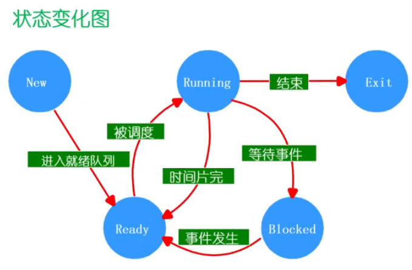
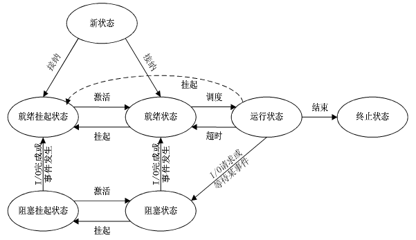

操作系统之 chapter7.2 进程状态
进程是一个具有一定独立功能的 程序 在一个 数据集合 上的 一次动态执行 过程。
本文是进程与线程的第二部分，主要介绍进程的状态，包括进程的生命周期管理、进程状态变化模型和进程挂起模型，以及操作系统如何管理进程的状态队列。
进程的生命周期管理
一个进程的生命周期包括：进程的创建、就绪、运行、等待（阻塞）、终止。
进程创建
引起进程创建的 3 个主要事件：
- 系统初始化（创建出计算机的首个进程）；
- 用户请求创建一个新进程；
- 正在运行的进程执行了创建进程的系统调用。
1 | P_create |
进程就绪
一个进程被创建完成后，便会进入就绪状态，等待操作系统的调度执行。
1 | P_create -> P_ready |
进程运行
内核选择一个 就绪 的进程，让它占用 CPU 并执行。
1 | P_create -> P_ready -> P_running |
计算机有那么多进程呢，操作系统如何选择进程？又为何选择这个进程？这由后续要讲解的调度算法控制！
进程等待（阻塞）
在以下情况下，进程等待（阻塞）：
- 请求并等待系统服务，无法马上完成；
- 启动某种操作，无法马上完成；
- 需要的数据没有到达。
1 | P_create -> P_ready -> P_running |
进程只能自己阻塞自己，因为只有进程自身才能知道何时需要等待某种事件的发生。
进程唤醒
唤醒进程的原因：
- 被阻塞进程需要的资源可被满足；
- 被阻塞进程等待的事件到达；
- 将该进程的 PCB 插入到就绪队列。
1 | P_create -> P_ready -> P_running |
被唤醒的进程将进入就绪状态，进程只能被别的进程或操作系统唤醒。
进程结束
在以下四种情况下，进程结束：
- 正常退出（自愿的）；
- 错误退出（自愿的）；
- 致命错误（强制性的）；
- 被其他进程所杀死（强制性的）。
1 | P_create -> P_ready -> P_running -> Exit |
进程状态变化模型
三种基本状态
进程的三种基本状态（进程在生命结束前处于三种基本状态之一）：
- 运行状态（Running）：当一个进程正在 CPU 上运行时。
- 就绪状态（Ready）：一个进程获得了除 CPU 之外的一切所需资源，一旦得到 CPU 便可运行。
- 等待（阻塞）状态（Waiting/Blocked）：一个进程正在等待某一事件而暂停运行时。如等待某资源、等待输入 / 输出完成。
不同操作系统设置的进程状态数目可能不同。
其它基本状态
进程其它的基本状态：
- 创建状态（New）：一个进程正在被创建，还没被转到就绪状态之前的状态；
- 结束状态（Exit）： 一个进程正在从系统中消失时的状态。
进程状态变化
进程可能的状态变化如下：
NULL -> New：一个新进程被产生出来执行一个程序。New -> Ready：当进程创建并并初始化完成后，一切就绪准备运行时，变为就绪状态。- 该变化过程是否会持续很久？很快。
Ready -> Running：处于就绪态的进程被进程调度程序选中后，就分配到 CPU 上来运行。Running -> Exit：当进程表示它已经完成或者发生异常，当前运行的进程会由操作系统作结束处理。Running -> Ready：处于运行状态的进程在其运行过程中，由于分配它的 CPU 时间片用完而让出 CPU，或者当一个高优先级的进程就绪时，操作系统可能会抢占当前正在运行的低优先级进程，并将其切换到就绪态，以便优先执行高优先级进程。Running -> Blocked：当进程请求某个事件且必须等待时。- 例如，等待一个计时器的到达、读 / 写文件比较慢等。
Blocked -> Ready：当进程等待到某个事件到来时，它从阻塞状态变到就绪状态。
进程挂起模型
进程挂起
进程挂起（suspend）是指操作系统进程管理将前台的进程暂停并转入后台的动作。将进程挂起可以让用户在前台执行其他的进程。挂起的进程通常释放除 CPU 以外已经占有的系统资源，如内存等。在需要时用户可以恢复进程的运行，将被挂起的进程从后台转入前台，并从暂停处开始继续运行。（Wikipedia）
进程挂起：为了合理且充分地利用系统资源。
进程在挂起状态时，意味着进程 没有占用内存空间，处在挂起状态的进程映像在磁盘上（把进程放到磁盘上）。
两种挂起状态
- 阻塞挂起状态：进程在外存，并等待某事件的出现。
- 就绪挂起状态：进程在外村，但只要进入内存，即可运行。
与挂起相关的状态转换
带有挂起状态的进程状态转移模型：
可以将挂起状态间的转化分为两类，一类是进程处于内存中时发生的挂起，另一类是进程处于外存时的挂起。
进程处于内存时的挂起
阻塞 -> 阻塞挂起：
- 条件：当没有进程处于就绪状态（即没有可以立即执行的进程）或者就绪进程需要更多的内存资源时，系统会进行阻塞挂起的转换。
- 目的：为了让其他进程先执行，以便提交新进程或者为就绪进程提供所需的内存资源。换句话说，系统会将当前的进程暂时停止执行，以满足其他进程的需求，直到满足某种条件后再重新唤醒该进程。
就绪 -> 就绪挂起：
- 条件：当有高优先级阻塞（系统认为会很快就绪的）进程和低优先级就绪进程时，系统会选择挂起低优先级就绪进程。
- 目的：让优先级更高的进程得到更多的资源运行。
通常，操作系统更倾向于挂起阻塞态进程而不是就绪态进程 ，因为就绪态进程可以立即执行，而阻塞态进程占用了内存空间但不能立即执行。
但是，如果释放内存以得到足够空间的 唯一方法 是挂起一个就绪态进程的话，那么这种转换也是必需的；并且，如果操作系统确信高优先级的阻塞态进程很快就会就绪，那么它可能选择挂起一个低优先级的就绪态进程，而不是一个高优先级的阻塞态进程。
运行 -> 就绪挂起：
- 条件：对抢先式分时系统（即可抢占 CPU 资源），当有高优先级阻塞挂起进程因事件出现而进入就绪挂起时，系统可能会把运行进程转到就绪挂起状态。
- 目的：让优先级更高的进程得到更多的资源运行。
进程处于外存时的挂起
阻塞挂起 -> 就绪挂起：
条件：当有阻塞挂起因相关事件出现时，系统会把阻塞挂起进程转换为就绪挂起进程。
解挂（激活）
既然有将内存中的进程挂起到外存的，那么也会有解挂重新激活进程的操作：即将一个进程从外存转到内存。
就绪挂起 -> 就绪态：
条件：内存中没有就绪进程，或挂起的就绪进程优先级高于内存中的就绪进程时，会进行这种转换。但一般情况下也会发生这种转换，不一定是上述两种条件。
阻塞挂起 -> 阻塞态：
条件：当一个进程释放足够内存时，系统会把一个高优先级阻塞挂起（系统认为会很快出现所等待的事件）进程转换为阻塞进程。
状态队列
状态队列（State Queue）是操作系统中用于管理进程状态的数据结构，用于存储不同状态的进程。
状态队列：
- 由操作系统来维护 一组 队列，用来表示系统当中所有进程的当前状态；
- 不同的状态分别用不同的队列来表示，如就绪队列、各种类型的阻塞队列；
- 每个进程的 PCB 都根据它的状态加入到相应的队列当中，当一个进程的状态发生变化时，它的 PCB 从一个状态队列中脱离出来，加入到另外一个状态队列中。
操作系统如何通过 PCB 和定义的进程状态来管理和调度进程的？
- 将进程根据其状态放入对应的队列中。
- 根据调度算法从就绪队列中选择一个进程进行执行。
- 将选中的进程的 PCB 信息加载到 CPU 寄存器中，设置进程状态为运行态。
- 执行选中的进程，根据需要进行上下文切换。
- 如果进程遇到事件（如等待 I/O 完成），将进程状态设置为阻塞态，记录事件信息到 PCB 中。
- 当事件发生后，将进程状态设置为就绪态，将其放回就绪队列中等待调度。
- 重复步骤 2 至步骤 6，实现多任务的并发执行和合理的进程调度。【由 GPT 生成】
参考资料：
1：https://github.com/OXygenMoon/OperatingSystemInDepth
2：https://blog.csdn.net/weixin_53407527/article/details/125027431